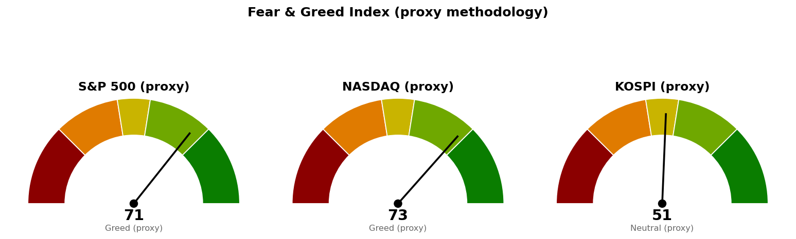

마지막으로 확정된 종가는 2026년 8월 28일(금)입니다. 오늘은 토요일이라 새 거래일 데이터가 없습니다.
다만 이번 조회에서 지수와 섹터 ETF 전 종목의 당일 등락률이 값 없음으로 반환되어, 하루치 상승·하락 퍼센트는 이 브리핑에 싣지 않습니다. 수치를 추정해 메우지 않았습니다. 대신 8월 28일 종가와 함께 정상적으로 산출된 이동평균 대비 위치와 RSI(상대강도지수 — 최근 상승폭과 하락폭의 비율을 0~100으로 나타낸 과열·침체 지표)로 섹터 간 우열을 판정했습니다.
| 섹터 (ETF) | RSI | 20일선 | 50일선 | 박스 내부 판정 |
|---|---|---|---|---|
| 에너지 (XLE) | 60.1 | 위 | 위 | 중립 |
| 헬스케어 (XLV) | 58.3 | 위 | 위 | 분산 우위 |
| 기술 (XLK) | 57.8 | 위 | 위 | 분산 우위 |
| 소재 (XLB) | 57.4 | 위 | 위 | 매집 우위 |
| 금융 (XLF) | 56.4 | 위 | 위 | 중립 |
| 커뮤니케이션 (XLC) | 51.0 | 위 | 위 | 분산 우위 |
| 필수소비재 (XLP) | 47.9 | 아래 | 아래 | 판정 불가 |
| 경기소비재 (XLY) | 46.1 | 아래 | 아래 | 중립 |
| 리츠 (XLRE) | 45.5 | 아래 | 아래 | 중립 |
| 산업재 (XLI) | 41.4 | 아래 | 아래 | 중립 |
| 유틸리티 (XLU) | 39.7 | 아래 | 아래 | 판정 불가 |
섹터 상대강도는 미국 SPDR 섹터 ETF 기준이며, 한국·일본은 지수 흐름만 제공됩니다.
읽는 법: 상위 6개는 20일선과 50일선을 모두 위에 두고 있고, 하위 5개는 두 선을 모두 아래에 두고 있습니다. 중간 지대가 거의 없다는 뜻이며, 자금이 섹터를 고르게 밀어올리는 국면이 아니라 한쪽에서 빼서 다른 쪽으로 옮기는 국면입니다.
주목할 점은 세 가지입니다.
첫째, 에너지가 1위입니다. 인플레이션이 다시 문제가 되는 국면에서 나타나는 전형적인 순서입니다.
둘째, 금리에 민감한 섹터가 나란히 최하위권입니다. 유틸리티 39.7, 리츠 45.5로 둘 다 20일선·50일선 아래입니다. 반대로 금리 상승에서 예대마진이 개선되는 금융은 56.4로 두 선 위에 있습니다. 시장은 이미 금리가 내려가는 쪽이 아니라 버티거나 올라가는 쪽에 자금을 배치하고 있습니다.
셋째, 경기소비재(XLY)가 기술(XLK)보다 크게 뒤처져 있습니다. 같은 성장 진영인데 소비 쪽만 20일선·50일선을 모두 내줬습니다. 아래 고용 뉴스와 맞물리는 대목입니다.
한편 기술(XLK)과 헬스케어(XLV)는 RSI가 높으면서도 박스 안쪽이 분산 우위로 판정됐습니다. 지지 구간을 시험할 때마다 매도 거래량이 늘고 박스 안 저점이 낮아지고 있다는 뜻입니다. 지수를 떠받치는 위치에 있지만 내부 손바뀜은 매수자에게 유리하지 않습니다. 반대로 소재(XLB)만 매집 우위로 판정됐습니다. 박스 안에서 눌릴 때마다 저점이 높아지고 상승할 때 거래량이 더 실린다는 뜻으로, 상위권 중 내부 수급이 가장 건전합니다.
| 지수 | 8/28 종가 | 20일선 | 50일선 | RSI |
|---|---|---|---|---|
| S&P 500 | 7,730.99 | 7,667.63 (위) | 7,571.34 (위) | 58.5 |
| 나스닥 | 26,541.35 | 26,205.77 (위) | 25,974.22 (위) | 56.8 |
| 코스피 | 6,912.37 | 6,726.09 (위) | 6,939.16 (아래) | 52.5 |
| 니케이 225 | 66,131.98 | 66,269.82 (아래) | 66,022.10 (위) | 49.3 |
미국 두 지수만 두 이동평균을 모두 위에 두고 있습니다. 코스피는 50일선 6,939.16을 아직 회복하지 못한 상태로, 이 선이 당면 저항입니다. 다만 코스피는 박스 안쪽이 매집 우위 후보로 판정돼, 상위 4개 시장 중 내부 수급 방향은 가장 나쁘지 않습니다. 6,939.16을 일봉 종가로 되찾으면 관망에서 매수로 전환할 근거가 생깁니다.
*CNBC, 8월 28일*
7월 기자회견에서 모호했던 입장을 잭슨홀에서 정리하며 금리를 더 올려야 하는 근거를 분명히 제시했습니다.
왜 중요한가: 지금 섹터 순위표가 그대로 이 발언의 결과물입니다. 유틸리티가 꼴찌(39.7), 리츠가 하위권(45.5)인 반면 금융이 상위권(56.4), 에너지가 1위(60.1)인 배열은 금리 인하가 아니라 인상을 반영한 배치입니다. 문제는 투자심리가 여전히 탐욕 구간이고 변동성지수(VIX)가 14.5로 낮다는 점입니다. 인상 리스크를 섹터 배치로는 반영하면서 지수 레벨과 변동성 가격에는 반영하지 않은 상태이며, 둘 중 하나는 조정될 수밖에 없습니다.
*Reuters, 8월 28일 / 관련: MarketWatch "채용 둔화, 당분간 회복 어렵다", 8월 29일*
MarketWatch는 올해 초 고용 급증 이후 여름 들어 채용이 다시 둔화됐고 구인 공고도 줄었다고 전했습니다.
왜 중요한가: 위 워시 발언과 겹치면 가장 나쁜 조합입니다. 고용은 식는데 금리는 올려야 하는 상황에서는 방어 섹터와 성장 섹터가 동시에 밀립니다. 실제로 경기소비재(XLY 46.1)와 필수소비재(XLP 47.9)가 나란히 20일선·50일선 아래인 것이 소비 둔화를 먼저 반영한 흐름으로 보입니다. 브로드컴 실적은 기술 섹터의 분산 우위 판정이 되돌려질지 확인하는 자리입니다.
*Reuters, 8월 29일*
왜 중요한가: 재무장관이 직접 엔화를 언급한 것은 환율 변동폭이 정책 당국의 관심 범위에 들어왔다는 뜻입니다. 니케이는 이미 20일선 66,269.82를 종가로 내준 상태(RSI 49.3)로 주요 4개 시장 중 가장 약합니다. 엔화가 급격히 움직이면 저금리 엔화를 빌려 다른 자산에 투자한 자금이 되돌려지는 과정에서 아시아 증시가 함께 흔들리며, 50일선 아래에 있는 코스피가 직접 영향권입니다.
아래 점수는 공포·탐욕 지수를 대체 방식으로 추정한 값(프록시)입니다. 원본 지수를 그대로 받아온 것이 아니라 모멘텀·RSI·변동성·안전자산 선호 네 항목을 합쳐 0~100으로 환산한 것이며, 0에 가까울수록 공포, 100에 가까울수록 탐욕입니다.

| 시장 | 점수 | 판정 |
|---|---|---|
| S&P 500 | 71.3 | 탐욕 |
| 나스닥 | 73.0 | 탐욕 |
| 코스피 | 51.3 | 중립 |
미국 점수를 끌어올린 것은 주로 변동성 항목 85.0입니다. VIX가 14.5로 낮게 형성돼 있어 나온 값이며, 실제 방향성 지표인 모멘텀(71.3)·RSI(58.5)보다 높습니다. 즉 미국의 탐욕 신호는 상승 확신보다 "아무 일도 없을 것"이라는 낮은 변동성 전망에서 나온 것이며, 1번 뉴스의 금리 인상 리스크와 정면으로 어긋납니다.
행동 기준은 신규 위험자산 확대 보류입니다. 보유 포지션을 정리하라는 뜻이 아니라, 지금 지수가 두 이동평균 위에 있는 상태에서 추가로 늘릴 자리는 아니라는 의미입니다. 다음 주 고용지표와 브로드컴 실적이 위 불일치를 어느 쪽으로 정리할지 확인한 뒤 움직여도 늦지 않습니다.
*본 자료는 투자자문이 아니라 참고 정보입니다. 모든 수치는 2026년 8월 28일 종가 기준이며, 당일 등락률은 데이터가 반환되지 않아 포함하지 않았습니다. 투자 판단과 그 결과에 대한 책임은 투자자 본인에게 있습니다.*